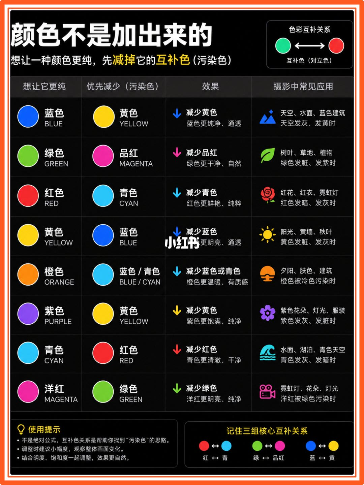
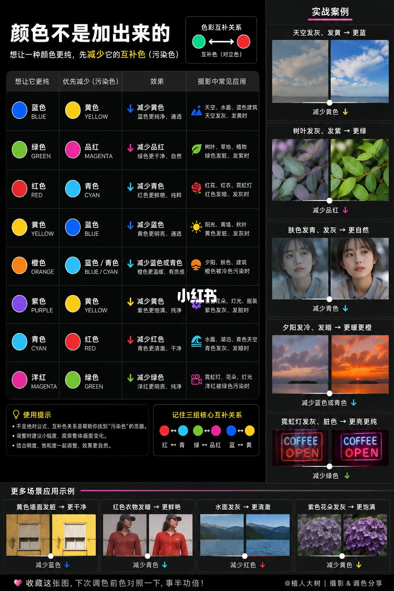

图文实录 · 小红书 · 植人大树
调色别只会“加颜色”｜摄影调色新手速进
想让一种颜色更纯，这两页给的做法是先减少它的互补色（污染色），再小幅度配合明度和饱和度；图上没有任何滑块数值。
1/2
一张速查表：先减互补色
深色底。大标题是「颜色不是加出来的」。副标题写：想让一种颜色更纯，先减掉它的互补色（污染色）。右上角一小块叫「色彩互补关系」，一对色圆用双向箭头连着，旁注「互补色（对立色）」，小图本身没有点名是哪一组。表有四列：想让它更纯、优先减少（污染色）、效果、摄影中常见应用。八行都是文字和色圆，没有百分比、没有软件名称。
| 想让它更纯 | 优先减少 | 效果 | 图上写的场合 |
|---|---|---|---|
| 蓝色 BLUE | 黄色 YELLOW | 减少黄色，蓝色更纯净、通透 | 天空、水面、蓝色建筑；天空发灰、发黄时 |
| 绿色 GREEN | 品红 MAGENTA | 减少品红，绿色更干净、自然 | 树叶、草地、植物；绿色发脏、发紫时 |
| 红色 RED | 青色 CYAN | 减少青色，红色更鲜艳、纯粹 | 红花、红衣、霓虹灯；红色发暗、发灰时 |
| 黄色 YELLOW | 蓝色 BLUE | 减少蓝色，黄色更明亮、通透 | 阳光、黄墙、秋叶；黄色发脏、发灰时 |
| 橙色 ORANGE | 蓝色 / 青色 BLUE / CYAN | 减少蓝色或青色，橙色更温暖、有质感 | 夕阳、肤色、建筑；橙色被冷色污染时 |
| 紫色 PURPLE | 黄色 YELLOW | 减少黄色，紫色更饱满、纯净 | 紫色花朵、灯光、服装；紫色发灰、发脏时 |
| 青色 CYAN | 红色 RED | 减少红色，青色更清澈、干净 | 水面、湖泊、青色天空；青色发灰、发暗时 |
| 洋红 MAGENTA | 绿色 GREEN | 减少绿色，洋红更明亮、纯净 | 霓虹灯、花朵、灯光；洋红被绿色污染时 |
左下「使用提示」三条：不是绝对公式，互补色关系是帮助你找到「污染色」的思路；调整时建议小幅度，观察整体画面变化；结合明度、饱和度一起调整，效果更自然。右下「记住三组核心互补关系」：红 ↔ 青，绿 ↔ 品红，蓝 ↔ 黄。这一页没有前后对比照片。
说明里把红色写成「发灰、发青」。表上红色那一行写的是「发暗、发灰」。以图为准。说明还写了打印贴在显示器旁、正文由 AI 撰写；这两句不在这一页上。

2/2
同一张表，加上前后对比
标题仍是「颜色不是加出来的」。副标题这里写成「先减少它的互补色（污染色）」，和上一页的「先减掉」用词差一个字，意思相同。左边仍是那张八行表和三条使用提示、三组核心关系。右边竖排「实战案例」，每组是前后两张小图加一句操作。底部横排「更多场景应用示例」。页脚写着收藏这张图、下次调色前对照一下，以及「@植人大树 | 摄影 & 调色分享」。仍然没有数值。
实战案例上的字：天空发灰、发黄 → 更蓝，减少黄色；树叶发灰、发紫 → 更绿，减少品红；肤色发青、发灰 → 更自然，减少青色；夕阳发冷、发暗 → 更暖更橙，减少蓝色或青色；霓虹灯发灰、脏色 → 更亮更纯，减少绿色。霓虹那组小图上能看见 COFFEE 和 OPEN。更多场景：黄色墙面发脏 → 更干净，减少蓝色；红色衣物发暗 → 更鲜艳，减少青色；水面发灰 → 更清澈，减少红色；紫色花朵发灰 → 更饱满，减少黄色。小图是示意对比，看不清具体参数，无法确认每张小图改了多少。

汇总
先找污染色，再小幅动
结论：这两页把「加目标色」换成「先减互补色」。第 1 页给出八行对照和三组核心关系；第 2 页用天空、树叶、肤色、夕阳、霓虹和四组场景小图，把同一套减法标在前后对比上。使用提示写明这不是绝对公式，要小幅度，并一起看明度和饱和度。
支撑：八行表和第 1 页底部三组在第 1 页；前后对比和「@植人大树」署名在第 2 页。红色一行的触发词以图上的「发暗、发灰」为准。
边界：这是这篇笔记的速查思路。图上没有软件、没有滑块读数，也不能当成所有照片的通则。说明里的打印建议和「AI 写的内容」不在图上。